Race screen — 2026-09-25 · updated 13:42
M2 P&L −£4.000 won, 2 lost · 19 to run · 1 non-runner
£2 per M2 priced 3.5–8 at the off (BSP; SP until BSP comes in next morning) · loser −£2 · winner £2 × (BSP − 1) less 5% commission
Order: each race is in market order (shortest forecast price first). A gold
◆ 1/2/3 marks your data model's top 3 — a gold pick at a
longer price is where your data disagrees with the market (a value spot for your eye).
Badges by the name: M2 Market #2 — 2nd favourite in the morning forecast, qualifying race; back only if the live price is 3.5–8.0 ★ EYE finished last run strongly (+score) ⚠ hard trk easy→hard track step-up (−score) ▼ easy trk recently placed at much tougher track (+score) ⚠ draw badly drawn here (−score) ⚠ pace run-style fights the course pace bias (−score) ⚠ ground has tried this going but never placed on it (−score) ▼ cls dropping in class today (+score) ▲ cls rising in class today (−score) ▼ in money in vs opening show ▲ drift drifting vs opening show ⚠ 2 runs / IRE form too little / foreign form to read.
OR column: ↑ green arrow = BHA rating rising (improving horse); ↓ orange = rating falling. TF column: Timeform stars 1–5 (★★★★★ = top rated).
Suit column: going✓ / trip✓ / trk✓ (track toughness) / draw✓ (well drawn).
Rest: green Crse = won there; yellow comment = trouble in running; greyed = novice/bumper or non-handicap 5–6f sprint (left out of the tally — handicap sprints now shown at full opacity). Res fills in after racing (winner green; ✓ = winner came from the top-3 market rows, ◆ = one of your gold data picks won); Spd is a rough home figure; BSP fills in the next morning.
Badges by the name: M2 Market #2 — 2nd favourite in the morning forecast, qualifying race; back only if the live price is 3.5–8.0 ★ EYE finished last run strongly (+score) ⚠ hard trk easy→hard track step-up (−score) ▼ easy trk recently placed at much tougher track (+score) ⚠ draw badly drawn here (−score) ⚠ pace run-style fights the course pace bias (−score) ⚠ ground has tried this going but never placed on it (−score) ▼ cls dropping in class today (+score) ▲ cls rising in class today (−score) ▼ in money in vs opening show ▲ drift drifting vs opening show ⚠ 2 runs / IRE form too little / foreign form to read.
OR column: ↑ green arrow = BHA rating rising (improving horse); ↓ orange = rating falling. TF column: Timeform stars 1–5 (★★★★★ = top rated).
Suit column: going✓ / trip✓ / trk✓ (track toughness) / draw✓ (well drawn).
Rest: green Crse = won there; yellow comment = trouble in running; greyed = novice/bumper or non-handicap 5–6f sprint (left out of the tally — handicap sprints now shown at full opacity). Res fills in after racing (winner green; ✓ = winner came from the top-3 market rows, ◆ = one of your gold data picks won); Spd is a rough home figure; BSP fills in the next morning.
Winner in the market top 3: 2/20 (10%) · in your gold data top 3: 1/20 (5%) — greyed novice / sprint races excluded
| Res | Horse | Price | BSP | Dr | Form | Crse | Suit | OR | Spd | TF | Last comment |
|---|---|---|---|---|---|---|---|---|---|---|---|
| 7 |  Arisaig ⚠ ground Arisaig ⚠ ground | 4.00 | - | 1 | 18-2-4-8-3-7 | 1r 1p | trip✓ trk✓ | 99 | 91 | ★★★★★ | Towards rear on outer, pushed along well over 2f out, no response |
| 4 | 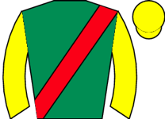 Estissa M2 | 4.50 | - | 6 | 1-2-1-3-3-4 | trk✓ | 98 ↑ | 88 | ★★★★☆ | ||
| 1 | 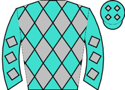 Alobayyah ◆ 3 | 5.00 | - | 7 | 1-8-5-3-1-7 | going✓ trip✓ trk✓ | 96 ↑ | 92 | ★★★★☆ | Went to post early, slowly away, took keen hold, soon recovered and midfield, switched rig | |
| 9 |  Gilding The Lily ◆ 2 ★ EYE ▲ cls Gilding The Lily ◆ 2 ★ EYE ▲ cls | 5.50 | - | 5 | 2-1-1 | 1r 1W | going✓ trip✓ trk✓ | 87 | 93 | ★★★☆☆ | In touch, went second after 1f, led over 1f out, kept on well inside final furlong |
| 6 | 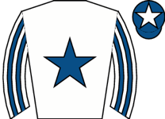 Applesandpears ★ EYE ▲ cls | 11.00 | - | 4 | 1-8-3-6-6-1 | going✓ trip✓ trk✓ | 85 | 94 | ★★★☆☆ | Held up in rear, ridden and headway over 1f out, stayed on strongly final furlong, led clo | |
| 8 | Blingy's Sister ⚠ ground | 13.00 | - | 3 | 10-4-3-2-6-12 | trip✓ trk✓ | 91 | 94 | ★★★☆☆ | ||
| 2 |  Lizzana ◆ 1 ▲ cls Lizzana ◆ 1 ▲ cls | 15.00 | - | 2 | 2-1-1 | trip✓ trk✓ | 96 | 95 | ★★★☆☆ | Wore hood to post, made all, hung right on bend over 2f out, soon shaken up, faced challen | |
| 3 | 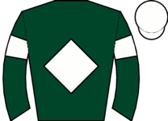 Song N Dance ★ EYE ▲ cls | 17.00 | - | 9 | 1-2-2-5-10-1 | 1r | going✓ trip✓ trk✓ | 86 | 93 | ★★☆☆☆ | Pushed along early to lead, headed after 4 furlongs, remained handy, pushed along well ove |
| 5 | 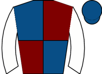 Crystal Flyer | 21.00 | - | 8 | 8-9-7-11-2-5 | going✓ trip✓ trk✓ | 92 | 95 | ★★☆☆☆ | Mid-division, pushed along over 2f out, ridden and weakened over 1f out |
| Res | Horse | Price | BSP | Dr | Form | Crse | Suit | OR | Spd | TF | Last comment |
|---|---|---|---|---|---|---|---|---|---|---|---|
| 0 |  Inis Mor Inis Mor | 3.50 | - | 7 | 4-12-1-3-2-8 | 2r | going✓ trip✓ trk✓ | 110 ↑ | 91 | ★★★★★ | Wore hood to post, midfield, shaken up 3f out, no impression when ridden over 2f out, fade |
| 0 | 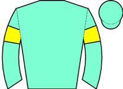 Prizeland ◆ 1 M2 | 4.50 | - | 1 | 1-1-2-2-1-4 | going✓ trip✓ trk✓ | 108 ↑ | 98 | ★★★★☆ | In rear, ridden 3f out, headway 2f out, kept on | |
| 0 |  Summerson Summerson | 7.50 | - | 4 | 2-2-1-4 | going✓ trip✓ trk✓ | 96 | 86 | ★★★☆☆ | Started akwardly and slowly away, held up in rear, ridden to make headway on near side fro | |
| 0 | 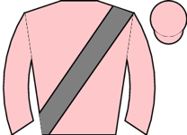 Without Prejudice ◆ 3 ▲ cls | 8.00 | - | 3 | 1-1 | 1r 1W | going✓ trk✓ | 92 | 88 | Led, headed after 2f, raced in second, going well when led again over 3f out, pushed along | |
| 0 |  Coedana Coedana | 8.00 | - | 12 | 1-1-3-2-3-1 | going✓ trip✓ trk✓ | 105 ↑ | 91 | ★★★★☆ | Wore hood to start, rear of midfield, headway and raced wide 2f out, led 1f out, hung left | |
| 0 | 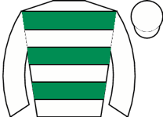 Francophone | 9.00 | - | 6 | 1-4-10-11-4-2 | 3r 1W | going✓ trip✓ trk✓ | 100 | 91 | ★★★☆☆ | Slowly away towards rear, pushed along to make headway from 2f out, veered left when took |
| 0 |  Brielle ◆ 2 ★ EYE Brielle ◆ 2 ★ EYE | 15.00 | - | 2 | 1-4-15-1-6-1 | 1r 1W | going✓ trip✓ trk✓ | 101 ↑ | 90 | ★★☆☆☆ | Made all, pushed along over 1f out, ridden inside final furlong, ran on well |
| 0 |  Venetia Venetia | 17.00 | - | 9 | 3-1-2-1-8-7 | going✓ trip✓ trk✓ | 95 ↑ | 98 | ★★☆☆☆ | ||
| 0 | 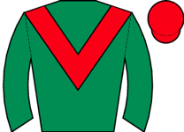 Frances Ethel ⚠ ground | 17.00 | - | 11 | 9-9-5-2-4-4 | 1r | 97 | 91 | ★★☆☆☆ | ||
| 0 | 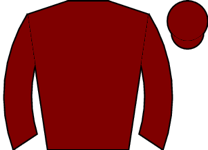 Sunshine Star | 26.00 | - | 10 | 2-6-1-2-4 | 1r | going✓ trk✓ | 95 | 90 | ★★☆☆☆ | Held up in rear, headway over 2f out, carried right over 1f out, weakened inside final 110 |
| 0 | Club Class | 67.00 | - | 8 | 4-4-2-2-2-12 | 1r 1p | going✓ trip✓ trk✓ | 98 ↑ | 85 | ★☆☆☆☆ | Wore hood to post, disputed lead early, soon raced in third, outpaced 3f out, short of roo |
| 0 |  Ryka ⚠ ground Ryka ⚠ ground | 67.00 | - | 5 | 15-1-2-1-6-8 | trip✓ trk✓ | 95 ↑ | 88 | ★★☆☆☆ | Midfield, some headway over 2f out, outpaced over 1f out, weakened inside final furlong |
| Res | Horse | Price | BSP | Dr | Form | Crse | Suit | OR | Spd | TF | Last comment |
|---|---|---|---|---|---|---|---|---|---|---|---|
| 0 | 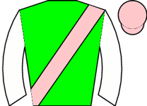 Spirited Gesture ◆ 3 ★ EYE ▲ cls | 2.62 | - | 7 | 1-1 | 1r 1W | going✓ trip✓ trk✓ | 88 | 91 | Wore hood to post, keen, prominent, shaken up to lead over 1f out, ran on well inside fina | |
| 0 |  Light Of Dawn ◆ 2 M2 Light Of Dawn ◆ 2 M2 | 4.50 | - | 4 | 1-3-3-1 | trip✓ trk✓ | 101 | 100 | ★★★★☆ | Wore earplugs to post, midfield, headway 2f out, pushed along to lead over 1f out, drifted | |
| 0 | 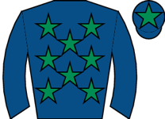 Sugar Yes Please ★ EYE | 5.50 | - | 8 | 4-1-1 | 1r 1W | going✓ trip✓ trk✓ | 102 | 92 | ★★★★☆ | Held up in touch, pushed along 2f out, short of room over 1f out, headway 1f out, stayed o |
| 0 |  Miss Miniver ▲ cls Miss Miniver ▲ cls | 8.00 | - | 6 | 2-1 | trip✓ trk✓ | 85 | 93 | Made all, pushed along 2f out, kept on entering final furlong, reduced advantage towards f | ||
| 0 | 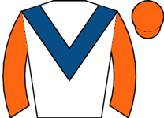 Siena Storm | 11.00 | - | 5 | 4-1-4 | going✓ trk✓ | 94 | 92 | ★★★☆☆ | Tracked leaders, lost place 2f out, dropped to rear and short of room over 1f out, ridden | |
| 0 | 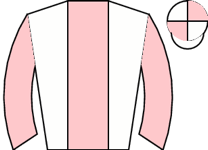 Pensando A Te ★ EYE ▲ cls | 12.00 | - | 3 | 2-1 | going✓ trk✓ | 86 | 90 | Raced in third, smooth progress to challenge 2f out, shaken up to lead over 1f out, ran on | ||
| 0 |  Speed of Sound ◆ 1 ★ EYE ▲ cls Speed of Sound ◆ 1 ★ EYE ▲ cls | 15.00 | - | 2 | 3-2-1-3-1 | 1r 1p | going✓ trip✓ trk✓ | 94 | 96 | ★★★☆☆ | Made all, ridden clear 2f out, ran on well |
| 0 | 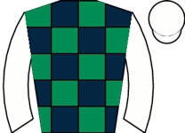 Ruby Moon ★ EYE | 21.00 | - | 9 | 1-4-9-2 | 1r | going✓ trk✓ | 94 | 94 | ★★★☆☆ | Chased leaders, ridden 2f out, ran on well final 110 yards, went second on line |
| 0 | 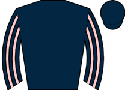 Sea Venture | 21.00 | - | 1 | 1-6 | trk✓ | 87 | 92 | Held up in rear, ridden and headway over 1f out, no extra final 110yds | ||
| 0 | 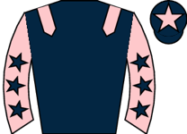 Redline | 34.00 | - | 10 | 1-1-8 | trip✓ trk✓ | 79 | 95 | ★★☆☆☆ | Led, pushed along 2f out, headed over 1f out, soon short of room when weakening quickly |
| Res | Horse | Price | BSP | Dr | Form | Crse | Suit | OR | Spd | TF | Last comment |
|---|---|---|---|---|---|---|---|---|---|---|---|
| 0 | 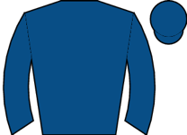 Talk Of New York ◆ 2 ★ EYE | 1.67 | - | 6 | 1-3-1-1-3-2 | 1r 1W | going✓ trip✓ trk✓ | 116 ↑ | 98 | ★★★★★ | Midfield, ridden 3f out, chased leader but plenty to do 2f out, kept on inside final furlo |
| 0 |  Persica ◆ 1 M2 Persica ◆ 1 M2 | 7.00 | - | 4 | 2-5-2-1-3-1 | going✓ trip✓ trk✓ | 114 | 100 | ★★★★☆ | Wore hood to start, prominent, closed on leader 2f out, disputed lead 1f out, clearly led | |
| 0 |  The Lost King ◆ 3 ★ EYE The Lost King ◆ 3 ★ EYE | 9.00 | - | 5 | 3-4-27-1-1-2 | 1r | going✓ trip✓ trk✓ | 110 ↑ | 99 | ★★★☆☆ | Wore hood to start, midfield, taken towards centre to make headway from 2f out, ridden ins |
| 0 |  Hankelow Hankelow | 11.00 | - | 3 | 2-1-3-13-9-4 | 1r 1W | going✓ trip✓ trk✓ | 112 ↑ | 102 | ★★★☆☆ | Led, set strong pace, ridden over 1f out, headed inside final furlong, weakened towards fi |
| 0 | 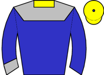 Colori Forever | 11.00 | - | 1 | 1-2-1-12-2-5 | 1r 1p | going✓ trip✓ trk✓ | 103 ↑ | 96 | ★★★★☆ | Held up in rear, taken towards centre to make headway 1f out, kept on, just denied fourth |
| 0 | 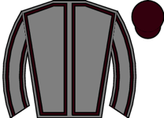 Audience | 13.00 | - | 7 | 13-9-2-3-3-2 | trip✓ | 106 | - | ★★☆☆☆ | Led, 2 lengths clear halfway, pushed along entering straight and headed over 1f out, ridde | |
| 0 | 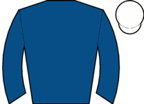 Wild Desert | 26.00 | - | 2 | 2-3-2-6-10-6 | 3r 2p | going✓ trip✓ trk✓ | 102 | 89 | ★★☆☆☆ |
⚠ limited form — likely skip
| Res | Horse | Price | BSP | Dr | Form | Crse | Suit | OR | Spd | TF | Last comment |
|---|---|---|---|---|---|---|---|---|---|---|---|
| 0 | 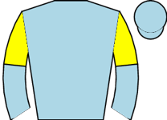 Kokbastau ◆ 3 ▲ cls | 1.91 | - | 2 | 6-3-1-1-1 | trip✓ trk✓ | 106 | 94 | ★★★★★ | Midfield, briefly ridden over 2f out, soon not clear run, ridden and headway between horse | |
| 0 |  Fortitudine ◆ 1 ★ EYE ▲ cls Fortitudine ◆ 1 ★ EYE ▲ cls | 3.50 | - | 4 | 1-1 | trk✓ | 105 | 97 | Made all, pushed along over 2f out, ridden over 1f out, kept on well inside final furlong | ||
| 0 |  Castlemont ◆ 2 ★ EYE ▲ cls Castlemont ◆ 2 ★ EYE ▲ cls | 6.50 | - | 3 | 1-1 | going✓ trip✓ trk✓ | 98 | 92 | Wore red hood to post, made all, pushed along 2f and hung left forging away, kept on well, | ||
| 0 | 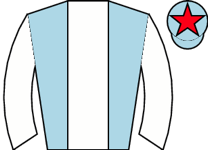 Archers Bay ▲ cls | 7.50 | - | 1 | 1-1-3-4-1-3 | 3r 1W | going✓ trip✓ trk✓ | 100 ↑ | 89 | ★★★☆☆ | Held up in touch, pushed along over 2f out, progress 2f out, went third over 1f out, lost |
⚠ limited form — likely skip
| Res | Horse | Price | BSP | Dr | Form | Crse | Suit | OR | Spd | TF | Last comment |
|---|---|---|---|---|---|---|---|---|---|---|---|
| 0 |  Sole Ambition ◆ 1 ▼ cls Sole Ambition ◆ 1 ▼ cls | 4.33 | - | 1 | 3-3 | trk✓ | 92 | Led, headed and prominent after 2f, pushed along over 2f out, drifted left but ridden to l | |||
| 0 |  Howzatt ◆ 3 ★ EYE ▼ cls Howzatt ◆ 3 ★ EYE ▼ cls | 5.50 | - | 14 | 4 | 90 | Towards rear, still going okay over 2f out, ridden and steady headway over 1f out, kept on | ||||
| 0 |  Quorum Quorum | 5.50 | - | 3 | unraced | - | |||||
| 0 | Senor Blues | 6.00 | - | 11 | 4 | 85 | Held up in rear, pushed along over 2f out, ridden and made headway inside final furlong, t | ||||
| 0 | 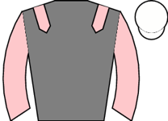 State Emperor | 9.00 | - | 12 | unraced | - | |||||
| 0 | 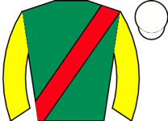 Maxton ▲ cls | 11.00 | - | 5 | 4 | 91 | Slightly hampered start, mid-division, went fourth halfway, soon pushed along and plugged | ||||
| 0 |  Soho Soho | 17.00 | - | 15 | unraced | - | |||||
| 0 | 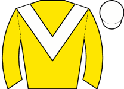 Twelve Bars | 17.00 | - | 10 | unraced | - | |||||
| 0 | 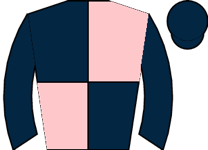 Minsmere ◆ 2 | 21.00 | - | 8 | 5-4 | 91 | Led, ridden and headed 2f out, weakened over 1f out | ||||
| 0 | 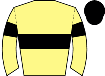 Sterling Cooper | 21.00 | - | 9 | 7 | 92 | Midfield, ridden over 2f out, soon hung left and weakened | ||||
| 0 | 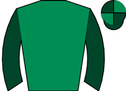 Jeepers Fortune | 26.00 | - | 6 | 6 | 93 | Slowly into stride, soon mid-division, ridden and no impression from over 2f out | ||||
| 0 |  Blue Victory ▲ cls Blue Victory ▲ cls | 26.00 | - | 2 | 5-9 | 1r | 91 | Slowly away, always towards rear | |||
| 0 | Clink | 34.00 | - | 4 | unraced | - | |||||
| 0 | 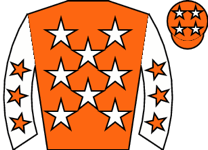 Dancingonthestars ⚠ ground ▲ cls | 51.00 | - | 13 | 9 | 85 | Slowly away, always in rear | ||||
| 0 | 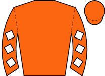 Arcimedes | 101.00 | - | 7 | unraced | - |
| Res | Horse | Price | BSP | Dr | Form | Crse | Suit | OR | Spd | TF | Last comment |
|---|---|---|---|---|---|---|---|---|---|---|---|
| 0 |  Waterford Castle ◆ 1 Waterford Castle ◆ 1 | 4.00 | - | 4 | 2-2-7-2-3-1 | 1r 1p | going✓ trk✓ | 88 ↑ | 89 | ★★★★☆ | Led, headed after 1f, led again on bend over 4f out, steadily asserted from 3f out, ridden |
| 0 |  Go Rimbaud ◆ 2 M2 ▲ cls Go Rimbaud ◆ 2 M2 ▲ cls | 4.33 | - | 5 | 1-5-1-15-2-2 | 1r 1p | going✓ trip✓ trk✓ | 88 ↑ | 92 | ★★★★★ | Soon led, headed 6f out, stayed prominent, effort on inside 2f out, no impression on winne |
| 0 | 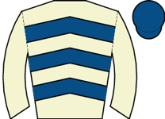 Runswick | 7.50 | - | 7 | 10-3-2-1-8-6 | 2r | going✓ trk✓ | 87 ↑ | 88 | ★★★★☆ | Tracked leaders, pushed along and lost position well over 1f out, soon beaten |
| 0 | 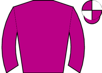 Joulany ⚠ ground ▼ cls | 8.00 | - | 9 | 2-4-3-2-19 | trk✓ | 91 | 100 | ★★★★☆ | Wore hood and went early to post, took keen hold, always towards rear, eased over 1f out | |
| 0 | 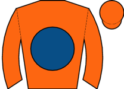 Be The Standard ◆ 3 | 11.00 | - | 10 | 3-2-1-4-5 | going✓ trk✓ | 81 | 89 | ★★★☆☆ | Wore hood to post, in touch with leaders, ridden 2f out, weakened over 1f out | |
| 0 |  Mythical Guest ⚠ ground ▲ cls Mythical Guest ⚠ ground ▲ cls | 11.00 | - | 6 | 9-3-4-3-12-3 | 3r 1p | trk✓ | 78 | 92 | ★★★☆☆ | Raced in third, pushed along 3f out, ridden and briefly led over 1f out, soon headed, outp |
| 0 | 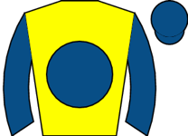 Silca Bay | 13.00 | - | 2 | 4-1-4-1-5-7 | 1r 1W | going✓ trk✓ | 79 ↑ | 92 | ★★★☆☆ | Held up in touch, ridden 2f out, never in contention |
| 0 |  Mythical Bird ▲ cls Mythical Bird ▲ cls | 13.00 | - | 8 | 11-10-3-1-5-5 | going✓ trk✓ | 77 | 89 | ★★★☆☆ | Wore hood to post, midfield, shaken up over 2f out, soon no impression, ran on same pace i | |
| 0 |  Flying Frontier ⚠ ground ▼ cls Flying Frontier ⚠ ground ▼ cls | 13.00 | - | 1 | 8-4-4-8-7-7 | 88 ↓ | 93 | ★★★☆☆ | Slowly away, held up in rear, switched right over 1f out, plugged on final 110yds | ||
| 0 |  Livemore ▲ cls Livemore ▲ cls | 17.00 | - | 3 | 5-1-6 | 1r 1W | going✓ trk✓ | 78 | 84 | ★★☆☆☆ | Led, headed over 2f out, weakened over 1f out |
| Res | Horse | Price | BSP | Dr | Form | Crse | Suit | OR | Spd | TF | Last comment |
|---|---|---|---|---|---|---|---|---|---|---|---|
| 0 | 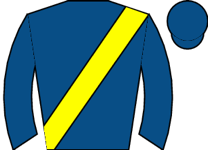 Condotti ◆ 2 | 3.50 | - | 3 | 4-9-3-2-5-2 | going✓ trip✓ trk✓ | 61 | 88 | ★★★★★ | Raced wide early, soon edged left and took second, pushed along and led over 1f out, ridde | |
| 0 |  Sweet Kiss M2 ▼ cls Sweet Kiss M2 ▼ cls | 4.50 | - | 1 | 6-2-6-2-2-5 | trip✓ trk✓ | 62 | 81 | ★★★☆☆ | Midfield, shaken up over 2f out, plugged on inside final furlong | |
| 0 |  Falcon Nine ▲ cls Falcon Nine ▲ cls | 5.50 | - | 2 | 2-2-2-8-11-3 | trip✓ trk✓ | 58 | 89 | ★★★★☆ | Took keen hold towards rear, headway over 2f out, ridden to press leader over 1f out, kept | |
| 0 | Ablon | 6.00 | - | 6 | 5-5-2-1-5-6 | 70 | 87 | ★★★☆☆ | Prominent, pushed along well over 2f out and soon dropped away quickly, eased final furlon | ||
| 0 | 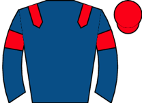 Solanna ◆ 1 | 11.00 | - | 4 | 4-3-2-1-6-5 | trip✓ trk✓ | 69 | 91 | ★★★☆☆ | In touch, shaken up over 3f out, ridden 2f out, switched right over 1f out, made no impres | |
| 0 |  Pleasant Man ◆ 3 ▼ cls Pleasant Man ◆ 3 ▼ cls | 11.00 | - | 5 | 7-3-3-1-3-8 | trk✓ | 69 | 84 | ★★★☆☆ | Led, headed after 6f but remained prominent, led again over 2f out, headed over 1f out, we | |
| 0 | 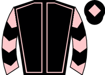 Titian | 13.00 | - | 8 | 6-6-16-4-4-7 | 66 ↓ | 84 | ★★☆☆☆ | Midfield, raced wide, pushed along 2f out, dropped towards rear and kept on one pace insid | ||
| 0 | 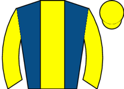 Study Up ⚠ ground | 21.00 | - | 7 | 3-4-1-2-8-9 | trip✓ trk✓ | 65 ↑ | 89 | ★★★☆☆ | Wore hood to start, midfield, headway and tracked leaders over 3f out, outpaced over 2f ou | |
| 0 | Dragonflame ⚠ ground | 34.00 | - | 9 | 2-2-9-11-9-10 | 1r | 64 | 87 | ★★☆☆☆ | Led, headed after 1f, ridden over 3f out, lost position 2f out, soon weakened |
| Res | Horse | Price | BSP | Dr | Form | Crse | Suit | OR | Spd | TF | Last comment |
|---|---|---|---|---|---|---|---|---|---|---|---|
| 0 |  Asgar ◆ 3 ★ EYE ▲ cls Asgar ◆ 3 ★ EYE ▲ cls | 3.75 | - | 5 | 9-4-6-1 | going✓ | 75 | 96 | ★★★★★ | Prominent, briefly dropped towards rear before halfway, pushed along over 2f out, headway | |
| 0 |  Noble Prince M2 Noble Prince M2 | 4.00 | - | 2 | 4-2-2 | going✓ trk✓ | 82 | 89 | ★★★★☆ | Prominent, ridden and briefly joined for second 2f out, kept on final furlong, no match fo | |
| 0 | 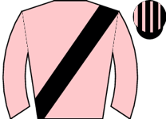 Keep Grating ◆ 1 ▼ cls | 4.50 | - | 3 | 6-3-2-1-2 | going✓ trip✓ trk✓ | 77 | 94 | ★★★☆☆ | Chased leaders, ridden 2f out, headway 1f out, ran on | |
| 0 |  Girl Scout ◆ 2 ▼ cls Girl Scout ◆ 2 ▼ cls | 6.00 | - | 4 | 5-3-1 | 1r 1W | trip✓ trk✓ | 76 | 91 | ★★★★☆ | Tracked leader until 6f out, stayed handy, not clear run and held in from over 2f out unti |
| 0 | Blanquita ★ EYE | 9.00 | - | 7 | 4-2 | trk✓ | 66 | 96 | Prominent, shaken up over 2f out, headway to press leader over 1f out, kept on inside fina | ||
| 0 | 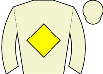 Thebesthasyetocome ▼ cls | 11.00 | - | 1 | 3-1-8 | going✓ trk✓ | 81 | 94 | ★★★★☆ | Slowly away, in touch, shaken up 3f out, ridden and outpaced over 2f out, short of room ov | |
| 0 | Real Edition ⚠ ground | 21.00 | - | 6 | 7-4-11 | 68 | 86 | ★★☆☆☆ | Carried right start, ran in snatches, midfield, weakened over 1f out |
⚠ limited form — likely skip
| Res | Horse | Price | BSP | Dr | Form | Crse | Suit | OR | Spd | TF | Last comment |
|---|---|---|---|---|---|---|---|---|---|---|---|
| 0 |  New Year's Eve New Year's Eve | 3.50 | - | 8 | unraced | - | |||||
| 0 |  Sizzling Affair ⚠ draw Sizzling Affair ⚠ draw | 3.75 | - | 1 | unraced | - | |||||
| 0 |  Lady Phillips ⚠ draw Lady Phillips ⚠ draw | 4.50 | - | 3 | unraced | - | |||||
| 0 |  Trapped Goddess Trapped Goddess | 7.50 | - | 6 | unraced | - | |||||
| 0 | 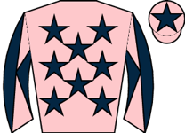 Lunar Storm | 9.00 | - | 11 | unraced | draw✓ | - | ||||
| 0 | 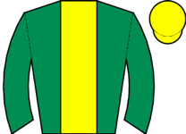 Constella ⚠ draw | 11.00 | - | 4 | unraced | - | |||||
| 0 |  March Lilly ◆ 2 ⚠ draw March Lilly ◆ 2 ⚠ draw | 13.00 | - | 2 | 3-5 | 88 | Led, headed after 1f, outpaced over 2f out, soon weakened | ||||
| 0 | 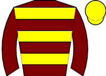 Liberal Lady | 13.00 | - | 10 | unraced | draw✓ | - | ||||
| 0 | 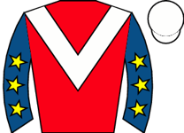 Grinanbearit ◆ 3 | 15.00 | - | 7 | unraced | - | |||||
| 0 | 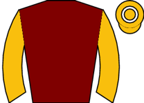 Floral ◆ 1 | 21.00 | - | 9 | 6 | draw✓ | 92 | Wore red hood to post, refused to settle, soon in rear, lost touch over 1f out | |||
| 0 |  Costa Verde Costa Verde | 21.00 | - | 12 | 9 | draw✓ | 90 | Went right start, took keen hold, held up in midfield, ridden over 2f out, no impression e | |||
| 0 | 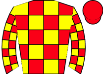 Ortenzian Twilight | 51.00 | - | 5 | unraced | - |
⚠ limited form — likely skip
| Res | Horse | Price | BSP | Dr | Form | Crse | Suit | OR | Spd | TF | Last comment |
|---|---|---|---|---|---|---|---|---|---|---|---|
| 0 |  Jassas ◆ 2 ⚠ draw ▼ cls Jassas ◆ 2 ⚠ draw ▼ cls | 2.38 | - | 2 | 1-5 | trip✓ | 89 | ||||
| 0 |  St Helier ◆ 1 ⚠ draw St Helier ◆ 1 ⚠ draw | 5.50 | - | 3 | 5-1 | trip✓ trk✓ | 89 | Made all, ridden over 1f out, ran on final furlong | |||
| 0 | 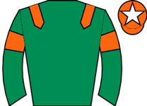 Great Oak ◆ 3 ▲ cls | 6.00 | - | 4 | 1 | trk✓ | 84 | Chased leader, ridden and disputed lead 2f out, kept on final furlong, led final strides | |||
| 0 | 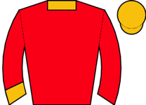 Harrow On The Hill ⚠ draw | 8.00 | - | 1 | unraced | - | |||||
| 0 | 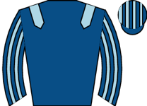 Native German | 8.50 | - | 8 | unraced | draw✓ | - | ||||
| 0 | Brave Country | 11.00 | - | 6 | unraced | - | |||||
| 0 | El Paso | 15.00 | - | 5 | 5-6 | 88 | Midfield, pushed along and progress over 2 out, held from over 1f out | ||||
| 0 | Grand Havana | 34.00 | - | 7 | 5 | draw✓ | 78 | Slowly away and hampered, in rear, ridden over 2f out, hung left over 1f out, never pace t | |||
| 0 | Dark Detective ▼ cls | 51.00 | - | 9 | 8-5 | draw✓ | 92 | In touch, shaken up over 3f out, ridden along over 2f out, never involved |
| Res | Horse | Price | BSP | Dr | Form | Crse | Suit | OR | Spd | TF | Last comment |
|---|---|---|---|---|---|---|---|---|---|---|---|
| 0 | Mr Noble ◆ 2 | 5.00 | - | 5 | 1-2-3-2-1-3 | trip✓ trk✓ | 90 ↑ | 98 | ★★★☆☆ | Chased leaders, pushed along over 2f out, ridden and led narrowly approaching final furlon | |
| 0 | Storm Free ◆ 1 M2 ★ EYE | 6.00 | - | 10 | 1-6-19-6-1-1 | going✓ trip✓ trk✓ draw✓ | 93 | 96 | ★★★★★ | Went left start, took keen hold, prominent, ridden over 2f out, not clear run over 1f out, | |
| 0 | Spaceman ▲ cls | 6.50 | - | 6 | 2-3-1-3-1 | going✓ trip✓ trk✓ | 82 | 97 | ★★★★☆ | Towards rear, good headway on outside from final bend, led inside final furlong, won going | |
| 0 | Aurora Majesty ◆ 3 ★ EYE | 7.50 | - | 9 | 2-12-16-7-3-1 | going✓ trip✓ trk✓ draw✓ | 92 | 99 | ★★★☆☆ | Wore hood to post, prominent, pushed along 3f out, ridden and led over 2f out, drew clear | |
| 0 | Anyasi | 8.00 | - | 11 | 3-1-1-5 | going✓ draw✓ | 90 | 94 | ★★★☆☆ | Taken down early, midfield near-side group, headway on near rail approaching 1f out, chase | |
| 0 | Scutari ▲ cls ⚠ FR form | 9.00 | - | 7 | 6-2-6-6-1-5 | trip✓ | 81 | 91 | ★★★☆☆ | Raced alone out wide early, towards rear, ridden to make some headway inside final furlong | |
| 0 |  Yorkshire ⚠ ground ▼ cls Yorkshire ⚠ ground ▼ cls | 11.00 | - | 4 | 9-11-9-2-3-10 | 1r 1p | trip✓ trk✓ | 91 | 93 | ★★★☆☆ | Taken down early and wore hood to post, soon raced in fifth, pushed along over 2f out, rid |
| 0 | Ata Rangi ⚠ draw | 13.00 | - | 2 | 5-5-1-4-8-6 | 2r 1W | trip✓ trk✓ | 86 | 93 | ★★★☆☆ | Towards rear, short of room over 2f out, ridden but denied clear run over 1f out, modest h |
| 0 |  Bobby Bennu ⚠ draw ⚠ ground Bobby Bennu ⚠ draw ⚠ ground | 13.00 | - | 3 | 5-15-4-2-12-15 | trip✓ trk✓ | 94 | 86 | ★★★☆☆ | Blindfold removed very late and detached in rear throughout | |
| 0 |  U Sure Do ⚠ draw ⚠ ground ▼ cls U Sure Do ⚠ draw ⚠ ground ▼ cls | 15.00 | - | 1 | 4-1-6-9-8-7 | trk✓ | 82 | 98 | ★★★★☆ | Raced near side, midfield, ridden 3f out, some headway entering final furlong, no further | |
| 0 | Great Dream ⚠ ground | 34.00 | - | 8 | 3-6-9-1-7-11 | trip✓ draw✓ | 89 ↑ | 96 | ★★☆☆☆ | Towards rear, well beaten under 2f out |
| Res | Horse | Price | BSP | Dr | Form | Crse | Suit | OR | Spd | TF | Last comment |
|---|---|---|---|---|---|---|---|---|---|---|---|
| 0 |  Asia Force ◆ 1 ★ EYE ▼ cls Asia Force ◆ 1 ★ EYE ▼ cls | 2.75 | - | 5 | 2-2-3-4-1-1 | 1r 1W | trip✓ trk✓ | 88 ↑ | 95 | ★★★★☆ | Made all, kept out wide and soon went four lengths clear, hung right and lost ground when |
| 0 |  Glory Of The Seas ◆ 2 M2 Glory Of The Seas ◆ 2 M2 | 4.00 | - | 1 | 2-4-3-1 | going✓ trk✓ | 87 | 97 | ★★★★☆ | Fly-leapt start, soon raced in third, hung left when led over 2f out, soon asserted and we | |
| 0 | My Ballyquinn ⚠ ground | 4.33 | - | 2 | 1-2-1-2-12-3 | trip✓ trk✓ | 89 ↑ | 90 | ★★★☆☆ | In rear, headway 2f out, ridden over 1f out, ran on | |
| 0 |  Glory Road ◆ 3 ▼ cls Glory Road ◆ 3 ▼ cls | 6.00 | - | 3 | 2-3-2-1-11 | going✓ trk✓ | 88 | 93 | ★★★★★ | Mid-division, never showed | |
| 0 |  Itica Itica | 11.00 | - | 4 | 12-2-5-6-1-7 | going✓ trk✓ | 78 | 94 | ★★★☆☆ | Chased leader, ridden to lead 2f out, headed over 1f out, weakened 1f out |
| Res | Horse | Price | BSP | Dr | Form | Crse | Suit | OR | Spd | TF | Last comment |
|---|---|---|---|---|---|---|---|---|---|---|---|
| 0 | Arrange ◆ 1 ★ EYE ▼ cls | 5.50 | - | 6 | 11-6-2-2-3-2 | 1r 1p | going✓ trk✓ | 69 ↓ | 81 | ★★★☆☆ | Taken down early, in touch with leaders, pushed along over 3f out, outpaced over 2f out, s |
| 0 | Percy Jones ◆ 2 M2 ▼ cls | 6.00 | - | 10 | 3-6-4-4-2-3 | trk✓ | 70 | 96 | ★★★★☆ | Visibility reduced by fog, chased leaders, led over 6f out, faced challenge when ridden ov | |
| 0 | Ottoman ◆ 3 ★ EYE ▲ cls | 7.50 | - | 9 | 2-5-1-5-5-1 | trk✓ | 61 ↑ | 86 | ★★★☆☆ | Keen, prominent, shaken up over 1f out, kept on to press leader gamely inside final furlon | |
| 0 | Shaffron ▲ cls | 7.50 | - | 2 | 4-5-9-9-3-2 | trk✓ | 59 ↓ | 83 | ★★★☆☆ | Held up toward rear of main group, ridden to chase leaders 2f out, took second inside fina | |
| 0 | Joanna Hiffernan ▲ cls | 8.00 | - | 12 | 6-4-4-2-2 | trk✓ | 58 | 81 | ★★★★☆ | Took keen hold, in touch in rear, ridden and headway to chase winner 3f out, outpaced afte | |
| 0 | Good Onya Mate ▲ cls | 11.00 | - | 14 | 2-13-5-4-4-3 | trip✓ | 62 | 89 | ★★★☆☆ | Chased leaders, cajoled along 4f out, pushed along well over 2f out, kept on, no impressio | |
| 0 | Circuit Breaker | 13.00 | - | 7 | 6-6-3-6-4-4 | 68 ↓ | 90 | ★★★☆☆ | Led, pushed along well over 1f out, ridden and headed approaching final furlong, soon weak | ||
| 0 | Dust Cover ▼ cls | 15.00 | - | 5 | 1-14-2-5-4-5 | 69 | 89 | ★★☆☆☆ | Mid-division, ridden over 2f out, headway over 1f out, unable to threaten leaders | ||
| 0 |  Velvet Whisper Velvet Whisper | 15.00 | - | 13 | 1-1-8-8-6-3 | trk✓ | 70 | 88 | ★★★★★ | Chased leader, led 3f out, pushed along and headed over 2f out, no extra inside final furl | |
| 0 | Marbuzet ⚠ ground ▼ cls | 15.00 | - | 1 | 4-5-11-9-1-12 | trk✓ | 69 ↓ | 84 | ★★☆☆☆ | Front mid-division, pushed along and lost ground over 3f out, soon behind | |
| 0 | Billy No Mates | 21.00 | - | 11 | 4-9-3-4-7-6 | 55 ↓ | 92 | ★★★☆☆ | Midfield, ridden and lost position over 2f out, plugged on from over 1f out, not trouble l | ||
| 0 | Sisterandbrother ▲ cls | 21.00 | - | 8 | 1-5-7-1-7-7 | trk✓ | 64 ↑ | 86 | ★★☆☆☆ | Mid-division, ridden over 2f out, no impression on leaders | |
| 0 |  Kotari Kotari | 21.00 | - | 4 | 4-3-4-6-5-4 | 62 ↑ | 70 | ★★☆☆☆ | Mid-division, pushed along before 2 out, plugged on, never threatened | ||
| 0 |  Togeather Forever ⚠ ground ▼ cls Togeather Forever ⚠ ground ▼ cls | 26.00 | - | 3 | 6-5-12 | 55 | 88 | ★★☆☆☆ | Taken down early wearing hood, took keen hold, handy on outer, lost position after 4f, in |
| Res | Horse | Price | BSP | Dr | Form | Crse | Suit | OR | Spd | TF | Last comment |
|---|---|---|---|---|---|---|---|---|---|---|---|
| 1 | Onehundredneighty | 4.00 | - | 15-2-3-5-4-2 | going✓ trip✓ trk✓ | 82 | 59 | ★★★★☆ | Led but pestered, collided with rival jumping 3 out, forged on and ridden 2 out, soon chal | ||
| 5 | Kally Des Bruyeres ◆ 1 M2 ▼ easy trk | 6.00 | - | 4-5-1-4-1-- | trk✓ | 89 ↑ | 74 | ★★★★★ | Mounted on course and taken down early, towards rear, raced wide and headway 8th, pushed a | ||
| 0 | Turpin Gold M2 | 6.00 | - | 4-2-10-3-4-2 | 3r 1p | going✓ trip✓ trk✓ | 100 ↓ | 65 | ★★★★☆ | Chased leaders, went second 3 out, pushed along 2 out, ridden run-in, kept on but no impre | |
| 4 | Forcetoreckonwith ◆ 2 ▼ easy trk | 9.00 | - | 4-3-2-1-4-- | trip✓ trk✓ | 92 ↑ | 78 | ★★★☆☆ | Prominent, going okay when fell 4 out | ||
| 2 | Prairie Queen ◆ 3 | 11.00 | - | 2-3-3-1-3-5 | 1r 1p | going✓ trip✓ trk✓ | 76 | 76 | ★★★☆☆ | Prominent, pushed along before 4 out, ridden next, weakened before 2 out | |
| 6 |  Blackijo Dagrostis ▼ easy trk Blackijo Dagrostis ▼ easy trk | 11.00 | - | --5-4-3-4-3 | trk✓ | 81 | 86 | ★★☆☆☆ | Mid-division, moved into third 6th, hit next, pushed along after 3 out, kept on, only one | ||
| 8 | Boom Boom | 11.00 | - | 7-------3-2 | 1r 1p | going✓ trip✓ trk✓ | 80 ↓ | 63 | ★★★☆☆ | Towards rear, in last before 5th, headway 4 out, disputed third jumping last, ridden run-i | |
| 3 | Applejack Poet ▲ cls | 11.00 | - | 6-4---8---3 | 79 ↓ | 78 | ★★☆☆☆ | Led, headed before halfway, raced in second, briefly disputed lead 2f out, ridden and outp | |||
| 0 | Galeforcechopper | 13.00 | - | 3-9-6-9-1-3 | 3r 1W | going✓ trip✓ trk✓ | 99 | 54 | ★★☆☆☆ | Led, slow 1st, wandered approaching 5th, ridden and headed before 2 out, soon outpaced by | |
| 7 | Good For You ▼ cls | 15.00 | - | 5-5-9-6---6 | 95 ↓ | 66 | ★★☆☆☆ | Midfield, in touch 2 out, soon pushed along, faded before last |
⚠ limited form — likely skip
| Res | Horse | Price | BSP | Dr | Form | Crse | Suit | OR | Spd | TF | Last comment |
|---|---|---|---|---|---|---|---|---|---|---|---|
| 2 | Turndlightsdownlow ◆ 1 ★ EYE ▼ easy trk ▼ cls | 2.62 | - | 2-1-1-2-2-2 | going✓ trip✓ trk✓ | 127 ↑ | 87 | ★★★☆☆ | Prominent, led 3 out, ridden before 2 out, headed before last, rallied to regain lead run- | ||
| 0 | El Capitaine ◆ 3 ★ EYE ▼ easy trk | 3.25 | - | --1-4-3-7-1 | trk✓ | 127 ↑ | 91 | ★★★★★ | Held up in rear, in touch 4 out, soon ridden, chased leaders 3 out, headway to lead before | ||
| 1 | Little Ledgend ◆ 2 ▼ easy trk ▲ cls | 3.75 | - | 2-2-3-2-2-1 | 2r 1W | going✓ trk✓ | 116 ↑ | 80 | ★★★★☆ | Rear mid-division, headway 6th, went third 8th, led after 4 out, forged clear before 2 out | |
| 4 |  Kayf Dancer ★ EYE ▼ cls Kayf Dancer ★ EYE ▼ cls | 3.75 | - | 4-10-8-1-6-2 | going✓ trip✓ trk✓ | 121 | 72 | ★★★☆☆ | Held up in rear, headway 3 out, smooth headway to lead after 2 out, ridden when mistake la | ||
| 3 | Serious Chat ▼ easy trk ▼ cls | 6.00 | - | 5-1-7-2-1-11 | trk✓ | 131 ↑ | 81 | ★★★☆☆ | Mid-division, pushed along 3 out, weakened after 2 out |
| Res | Horse | Price | BSP | Dr | Form | Crse | Suit | OR | Spd | TF | Last comment |
|---|---|---|---|---|---|---|---|---|---|---|---|
| 0 | Merely A Detail ▲ cls | 5.00 | - | 3-4-3-4-1-1 | 1r 1W | going✓ trk✓ | 115 | 75 | ★★★★☆ | In rear, chased leaders 4th, improved after 4 out, led 3 out and pushed along, forged away | |
| 0 | Palamon M2 ▲ cls | 5.50 | - | 1-6-3-5-5-3 | 1r | trip✓ trk✓ | 115 | 84 | ★★★★★ | In rear, went modest third jumping final fence and pushed along, no chance with front duo | |
| 0 | Youdecide | 6.00 | - | 4-4---1-1-2 | 1r 1p | going✓ trip✓ trk✓ | 110 ↑ | 58 | ★★★★☆ | Took keen hold, prominent, pressed leader before 8th, disputed lead 3 out, soon ridden, ke | |
| 0 | Loki's Mischief ▲ cls | 6.00 | - | 3-2---2-1-1 | going✓ trk✓ | 110 ↑ | 56 | ★★★★☆ | Held up behind leaders, chased leader after 4th, pressed leader from 10th, ridden to lead | ||
| 0 |  Regal Renaissance ◆ 2 ▼ easy trk ▲ cls Regal Renaissance ◆ 2 ▼ easy trk ▲ cls | 9.00 | - | 2-1-1-1-3-2 | 1r 1p | going✓ trip✓ trk✓ | 120 ↑ | 66 | ★★★☆☆ | Chased front pair, pushed along after 2 out, took second jumping final fence, stayed on on | |
| 0 | Pep Talking ◆ 1 ▲ cls | 11.00 | - | 2-1-2-2-1-2 | 1r 1p | going✓ trip✓ trk✓ | 117 ↑ | 75 | ★★★☆☆ | Tracked leaders, mid-division 5th, mistake 6th, ridden 4 out, plugged on, left in modest s | |
| 0 | Country Park ▼ easy trk ▲ cls | 11.00 | - | --4-4-1-3-4 | 1r | trip✓ trk✓ | 117 | 75 | ★★★★☆ | Held up towards rear, not fluent 6th, ridden before 2 out, kept on without threatening lea | |
| 0 | She Is For Me Boys ◆ 3 ▲ cls | 13.00 | - | 3-3-2-1-3-2 | 1r 1W | going✓ trip✓ trk✓ | 110 | 68 | ★★★☆☆ | Handy, led 2nd, headed 3 out, pushed along 2 out, kept on but no match for winner before l | |
| 0 | Martin's Denuo ▲ cls | 15.00 | - | ----8---4-2 | going✓ trk✓ | 108 | 69 | ★★☆☆☆ | In touch in rear, led 6th, a length ahead 3 out, ridden and headed 2 out where mistake, ev | ||
| 0 | Karnaval Point | 17.00 | - | 1-3-1-6-3-5 | 2r 1W | going✓ trip✓ trk✓ | 124 ↑ | 59 | ★★☆☆☆ | Led, pressed for lead before 8th, ridden before 4 out, headed 3 out, not fluent 2 out, no | |
| 0 | Coastguard Station ⚠ ground ▲ cls | 34.00 | - | 6-2-4-2-6-8 | 1r | trk✓ | 120 ↓ | 67 | ★☆☆☆☆ | In rear, ridden 9th, lost touch 3 out | |
| 0 |  Disco Davis ▲ cls Disco Davis ▲ cls | 101.00 | - | --4-3---6-5 | 3r 1p | trk✓ | 97 ↓ | 58 | ★☆☆☆☆ | Chased leaders, ridden before 3 out, weakened and lost touch before 2 out, |
⚠ limited form — likely skip
| Res | Horse | Price | BSP | Dr | Form | Crse | Suit | OR | Spd | TF | Last comment |
|---|---|---|---|---|---|---|---|---|---|---|---|
| 0 | Down To Business ▲ cls | 5.00 | - | 6-3-3-4-5-1 | 1r 1W | going✓ trk✓ | 114 ↑ | 63 | ★★★★☆ | Mid-division, closed 4 out, waited with in fourth before 3 out, pressed leader and pushed | |
| 0 | Lock Stock ★ EYE ▼ easy trk ▲ cls | 7.50 | - | 2-10-2-2-9-1 | 2r 1W | going✓ trk✓ | 116 | 54 | ★★★☆☆ | Jumped slightly left throughout, made all, four lengths clear 3 out, soon pushed along, ma | |
| 0 | Road To Wembley ◆ 1 ★ EYE ▼ easy trk ▲ cls | 8.00 | - | 9-2-2-1-1-1 | 1r 1W | going✓ trip✓ trk✓ | 124 ↑ | 83 | ★★★★★ | Mid-division, headway after 4 out, disputed third 3 out and pushed along, ridden approachi | |
| 0 | Square D'alboni ◆ 3 ▲ cls | 8.00 | - | 9-3-7-1-1-2 | 2r 1W | going✓ trip✓ trk✓ | 119 ↑ | 75 | ★★★☆☆ | Mid-division, improved 4th and soon took third, pushed along and led approaching 2 out, ri | |
| 0 | Miss Kingston ▲ cls | 13.00 | - | 4-3-7-4-1-2 | 1r 1p | going✓ trk✓ | 116 | 70 | ★★★☆☆ | Led, faced challenge approaching last, ridden and hung left run-in, kept on, headed final | |
| 0 | Yellow Card ▲ cls | 13.00 | - | 8-11-2-1-2-6 | 1r 1p | going✓ trip✓ trk✓ | 112 ↓ | 74 | ★★★☆☆ | Chased leaders, joined second 8f out, outpaced and lost place over 3f out, well beaten fin | |
| 0 | So Proud ▲ cls | 13.00 | - | 1-5-4-3-2 | 1r 1p | going✓ trk✓ | 104 | 66 | ★★★☆☆ | Held up in rear, in touch 2 out, ridden and headway approaching last, briefly pressed winn | |
| 0 | Regarde ◆ 2 ★ EYE ▼ easy trk ▲ cls | 15.00 | - | 3-5-2-2---1 | 1r 1W | going✓ trip✓ trk✓ | 117 ↓ | 78 | ★★☆☆☆ | Led, headed 2nd, remained prominent, led again after 4th, headed 6th, chased leader, lost | |
| 0 | Trouville ▲ cls | 15.00 | - | 2-3-3-1-4-2 | 3r 1W | going✓ trip✓ trk✓ | 120 ↑ | 72 | ★★★☆☆ | Wore red hood to post, mid-division, headway approaching 3 out, pushed along before 2 out, | |
| 0 | Oneinthewell ▼ easy trk ▲ cls | 15.00 | - | 3-2-2-1-4-4 | 2r 1p | going✓ trk✓ | 110 ↑ | 79 | ★★☆☆☆ | Held up in touch, 3rd halfway, pushed along and dropped to rear 3f out, no extra | |
| 0 | Likewhatyousee ▲ cls | 15.00 | - | 2-1-2-1-2-6 | 1r | going✓ trk✓ | 108 ↑ | 69 | ★★☆☆☆ | Rear mid-division, headway before 5th, pushed along and weakened 3 out | |
| 0 | Who's Glen ★ EYE ▼ easy trk ▲ cls | 17.00 | - | 7-3-2-15-4-1 | going✓ trip✓ trk✓ | 110 | 83 | ★★★☆☆ | Held up towards rear, headway to chase leader before 2 out, ridden to lead 2 out, not flue | ||
| 0 | Katarcice ▲ cls | 17.00 | - | 3-2-2-3 | going✓ trk✓ | 108 | 53 | ★★★☆☆ | Led, set steady early pace, pushed along when headed before 2 out, outpaced by leading pai | ||
| 0 | Media Mogul ▲ cls | 17.00 | - | 2-4-4-4-1-3 | 2r 1W | going✓ trk✓ | 105 ↑ | 68 | ★★☆☆☆ | Midfield, not fluent 3 out, soon pushed along, went third run-in, stayed on | |
| 0 | Devon Red ▲ cls | 26.00 | - | 4-2-4-2 | 1r | going✓ trk✓ | 87 | 58 | ★★★★☆ | Soon raced in close second, not fluent 3 out, pressed winner from 2 out, every chance last | |
| 0 | Whinney Hill ▲ cls | 34.00 | - | 9---4-----5 | 1r | 117 | 58 | ★☆☆☆☆ | In rear, jumped left throughout, pushed along after 4 out, plugged on, never in contention |
⚠ limited form — likely skip
| Res | Horse | Price | BSP | Dr | Form | Crse | Suit | OR | Spd | TF | Last comment |
|---|---|---|---|---|---|---|---|---|---|---|---|
| 0 | Premier Tenor ◆ 1 | 2.10 | - | 1-3-2 | 2r 2p | trk✓ | 109 | 52 | ★★★★☆ | Mid-division, mistake 4th, moved into fourth before 3 out where not fluent and pushed alon | |
| 0 | Ade Boy | 4.00 | - | 1-6-3-4 | going✓ trk✓ | 108 | 47 | ★★★★★ | Raced in second, pushed along 3 out, outpaced on bend before 2 out, weakened and lost thir | ||
| 0 | Black Eddy | 4.50 | - | 1-15-5 | going✓ trk✓ | 40 | ★★★☆☆ | Held up in rear, outpaced soon after halfway, stopped quickly and eased when tailed off ov | |||
| 0 | Moi Mon Vieux | 13.00 | - | 6-2-4 | trk✓ | 40 | ★★★☆☆ | Chased leaders, pushed along before 2 out and dropped away quickly | |||
| 0 |  Action Replay Action Replay | 15.00 | - | - | 1r | 63 | Midfield, ridden before 5th, dropped to last before 3 out, soon pulled up | ||||
| 0 |  Emerald West ⚠ ground ▲ cls Emerald West ⚠ ground ▲ cls | 21.00 | - | 7 | 41 | Mid-division, pushed along well over 3f out and dropped away tamely | |||||
| 0 | Zerouali ⚠ ground | 34.00 | - | 6-10 | 46 | Veered badly right 1st, always towards in rear and not jump fluently throughout, tailed of | |||||
| 0 | Georgemani ◆ 3 | 67.00 | - | --- | 71 | Midfield, dropped to rear before 6th, detached after 7th, pulled up before 3 out | |||||
| 0 | Sir Vinnie Kent ◆ 2 | 101.00 | - | - | 71 | Novicey jumping, always behind, pulled up before 3 out |
| Res | Horse | Price | BSP | Dr | Form | Crse | Suit | OR | Spd | TF | Last comment |
|---|---|---|---|---|---|---|---|---|---|---|---|
| 0 | The Egyptian Ginge ◆ 1 ▼ easy trk | 4.33 | - | 5-5-3-2-2-1 | going✓ trk✓ | 120 | 78 | ★★★★☆ | Held up in rear, went midfield 2nd, headway 8th, left in lead 9th, pressed for lead when a | ||
| 0 |  That's Nice ◆ 2 M2 That's Nice ◆ 2 M2 | 5.00 | - | 2---3-3-4-1 | 1r 1W | going✓ trip✓ trk✓ | 116 ↓ | 63 | ★★★☆☆ | Wore red hood to post, tracked leaders, pressed front pair from 3 out, ridden 2 out, kept | |
| 0 | Secret Trix ▼ cls | 5.50 | - | 2-3-3-2-2-4 | going✓ trip✓ trk✓ | 118 | 56 | ★★★★☆ | Wore hood to post, midfield, ridden after 3 out, no impression | ||
| 0 |  Tiger Orchid Tiger Orchid | 6.00 | - | 2-2-3-1-5-6 | 1r | going✓ trip✓ trk✓ | 118 ↑ | 60 | ★★★☆☆ | Midfield, headway before 4 out, asked for effort before 3 out where blundered, soon beaten | |
| 0 | Gold For Alec ▼ cls | 6.50 | - | 8-----3-1-7 | going✓ trk✓ | 117 | 77 | ★★★★★ | Mid-division, pushed along before 2 out, plugged on, never involved | ||
| 0 |  Break Point Break Point | 13.00 | - | 10-3-1-4-4-2 | 1r | going✓ trk✓ | 105 ↑ | 82 | ★★★☆☆ | Handy, led after 5th, pushed along before 2 out, ridden before last where headed on approa | |
| 0 |  I'm A Starman ▲ cls I'm A Starman ▲ cls | 15.00 | - | 3-8-4-5-2-- | 2r 1p | going✓ trip✓ trk✓ | 111 ↓ | 61 | ★★★☆☆ | Mid-division, slow jump 9th and struggling, jumped badly right next and pulled up | |
| 0 | Gwash ▼ cls | 17.00 | - | 6-5-3-2-7-3 | 3r 2p | going✓ trip✓ trk✓ | 110 | 60 | ★★★☆☆ | Held up in rear, not fluent 1st, mistake 4th, headway 10th, went third before 3 out, no im | |
| 0 | Moon D'orange ◆ 3 ▼ easy trk ▼ cls | 21.00 | - | 6-7-10-3-7-15 | trk✓ | 122 | 91 | ★★☆☆☆ | Mid-division, lost ground and cajoled along 4 out, no response |
| Res | Horse | Price | BSP | Dr | Form | Crse | Suit | OR | Spd | TF | Last comment |
|---|---|---|---|---|---|---|---|---|---|---|---|
| 0 | Lucky Sevens ▲ cls | 3.25 | - | 5-1-2-1-4-12 | trip✓ trk✓ | 100 | 75 | ★★★★☆ | Mid-division, ridden and weakened over 2f out, | ||
| 0 | Network Rgb M2 | 4.00 | - | 7-4-4-8-1 | 1r 1W | going✓ trip✓ trk✓ | 102 | 57 | ★★★★☆ | Wore red hood to post, chased leaders, shaken up and led 3 out, headed narrowly 2 out and | |
| 0 | Mojo Ego ◆ 1 | 5.00 | - | 7-6-1-6-3-1 | 2r 1W | going✓ trip✓ trk✓ | 99 | 71 | ★★★★☆ | Pressed leader, led narrowly after 3 out, ridden approaching last, pressed by runner up on | |
| 0 | Al Mootamarid ◆ 3 ▼ cls | 5.00 | - | 3-5-11-3-3-7 | 2r 2p | trk✓ | 99 ↑ | 77 | ★★★★☆ | Front mid-division, went fourth 4th, pushed along and weakened 3 out | |
| 0 | Douglas Dc ◆ 2 ▼ easy trk ⚠ ground ▲ cls | 9.00 | - | 7-5-5-2-4-4 | trk✓ | 102 | 88 | ★★★★★ | Soon raced in second, pushed along when lost position over 3f out, pushed along over 2f ou | ||
| 0 |  T Or Coffey T Or Coffey | 26.00 | - | 1-2-5-6-6-8 | 1r | trip✓ trk✓ | 102 ↑ | 58 | ★★★☆☆ | Midfield, mistake 5th, outpaced and struggling before another mistake 3 out, weakened and | |
| 0 | Castle Quarter ⚠ ground | 26.00 | - | 6-7-10-5-3-10 | 2r | trk✓ | 82 ↑ | 59 | ★★☆☆☆ | Front mid-division, pushed along before 3 out, ridden and dropped away 2 out | |
| 0 | Peter's Last Deal ⚠ ground ▼ cls | 34.00 | - | 3-5-3-6-7-6 | 1r | trk✓ | 91 | 47 | ★★☆☆☆ | In rear, plugged on past beaten rivals, never a factor | |
| 0 | Granny B ⚠ ground | 51.00 | - | 6-3---5-7-7 | trk✓ | 71 ↓ | 55 | ★★☆☆☆ | Mid-division, mistake 2nd, effort on inside when not fluent 3 out, weakened 2 out | ||
| 0 | Connemara Joe ⚠ ground | 51.00 | - | 4-6-5-8-8 | 2r | 78 | 54 | ★★☆☆☆ | Towards rear, ridden and lost touch after 2 out |
| Res | Horse | Price | BSP | Dr | Form | Crse | Suit | OR | Spd | TF | Last comment |
|---|---|---|---|---|---|---|---|---|---|---|---|
| 0 | Rubellite ◆ 1 ▼ cls | 2.88 | - | 9 | 4-1-1-4-5-1 | 3r 2W | going✓ trip✓ trk✓ | 64 | 90 | ★★★★★ | Missed break, towards rear, headway over 2f out, ridden to lead over 1f out, ran on final |
| 0 |  Newport ◆ 2 M2 ▼ cls Newport ◆ 2 M2 ▼ cls | 3.75 | - | 10 | 1-4-4-1-5-10 | 65 ↓ | 84 | ★★☆☆☆ | Handy, pushed along and lost position well over 2f out, soon beaten | ||
| 0 | Farabove The Limit ★ EYE ⚠ ground | 6.50 | - | 4 | 11-3-8-4-9-1 | 2r 1p | trk✓ | 62 ↓ | 91 | ★★★★☆ | Midfield, pushed along over 1f out, ran on well inside final final furlong, edged right wh |
| 0 |  Hey Havana ◆ 3 ▼ cls Hey Havana ◆ 3 ▼ cls | 7.50 | - | 13 | 2-5-2-4-3-8 | trk✓ | 57 | 89 | ★★★☆☆ | Towards rear, pushed along 1f out, outpaced inside final furlong weakened towards finish | |
| 0 | That Darn Cantor ▼ cls | 9.00 | - | 11 | 9-5-6-4-3-4 | 65 | 76 | ★★★☆☆ | Towards rear, outpaced from over 1f out, weakened quickly inside final furlong | ||
| 0 | Cusack ⚠ ground ▼ cls | 13.00 | - | 2 | 9-4-8-6-12-12 | 6r | 61 ↓ | 89 | ★☆☆☆☆ | Always in rear | |
| 0 | Dancingondiamonds ▼ cls | 21.00 | - | 8 | 5-5-8---3-6 | 62 | 71 | ★★☆☆☆ | Dwelt, in rear, pushed along over 2f out and closed, weakened over 1f out | ||
| 0 | Ouro Preto ⚠ ground ▼ cls | 21.00 | - | 12 | 9-7-9-11-8-9 | 1r | 61 ↓ | 88 | ★★☆☆☆ | Wore hood to post, mid-division, pushed along over 3f out, ridden and made little impressi | |
| 0 | Sutton Hoo ▼ cls ⚠ IRE form | 34.00 | - | 6 | 6-9-1-12-11-9 | going✓ | 64 | 84 | ★★☆☆☆ | Held up in rear, ridden over 2f out, dropped to last 1f out, weakened inside final 110yds | |
| 0 | Spirit Of Nature | 51.00 | - | 3 | 4-8-7-10-6-7 | 46 | 88 | ★★☆☆☆ | Always towards rear, outpaced from 2f out, weakened quickly inside final furlong | ||
| 0 | Beckon | 101.00 | - | 7 | 1-6-3-9-9-14 | 1r 1W | going✓ trk✓ | 61 | 89 | ★☆☆☆☆ | Slipped start and slowly away, in rear near side, detached before halfway, pushed along an |
| 0 | Havachoc ▼ cls | 101.00 | - | 1 | 2-6-2-4-7-9 | 1r 1p | going✓ trip✓ trk✓ | 54 | 66 | ★★★★☆ | In rear, never a factor, tailed off from over 3f out |
| 0 |  Beat The Odds ⚠ ground Beat The Odds ⚠ ground | 101.00 | - | 5 | 7-6-9-8-6-5 | 3r | 45 | 84 | ★☆☆☆☆ | Led, faced challenge over 2f out, ridden when headed over 1f out, weakened quickly inside |
| Res | Horse | Price | BSP | Dr | Form | Crse | Suit | OR | Spd | TF | Last comment |
|---|---|---|---|---|---|---|---|---|---|---|---|
| 0 |  Rugby Union ◆ 2 ★ EYE Rugby Union ◆ 2 ★ EYE | 4.50 | - | 5 | 16-5-9-5-8-1 | 1r 1W | going✓ trip✓ trk✓ draw✓ | 57 ↓ | 86 | ★★★★★ | Took keen hold, in touch with leaders, not clear run 2f out, switched left and ridden over |
| 0 | Balmoral Boy M2 | 6.00 | - | 14 | 8-11-4-2-7-3 | trip✓ trk✓ | 58 ↓ | 89 | ★★★★☆ | Towards rear near side, taken towards centre to make headway from 1f out, hung left inside | |
| 0 | Token Love ◆ 1 | 6.50 | - | 8 | 2-5-7-4-2-3 | 1r 1p | going✓ trip✓ trk✓ draw✓ | 57 | 89 | ★★★★☆ | Chased leader, disputed lead after 3f, led well over 3f out, ridden 2f out, headed over 1f |
| 0 | Gemini Man | 7.00 | - | 6 | --9-2-4-2-4 | 3r 1p | going✓ trk✓ draw✓ | 55 | 87 | ★★★☆☆ | Mid-division, pushed along 3f out, ridden and no impression 2f out, kept on one pace |
| 0 | Pureis King ◆ 3 ⚠ hard trk | 11.00 | - | 7 | 8-2-1-1-5-6 | trip✓ draw✓ | 57 ↑ | 87 | ★★★☆☆ | Led, ridden and headed over 2f out, faded over 1f out | |
| 0 | Falaise Blanc | 11.00 | - | 9 | 2-7-3-2-4-4 | trk✓ draw✓ | 46 | 92 | ★★★☆☆ | Midfield, chased leaders from 2f out, kept on one pace final furling, took fourth inside f | |
| 0 |  Rory's Gold ⚠ ground Rory's Gold ⚠ ground | 11.00 | - | 10 | 8-2-8-8-7-3 | 1r | trk✓ | 56 ↓ | 88 | ★★★☆☆ | Led, ridden and headed over 1f out, lost second and no extra well inside final furlong |
| 0 |  Phaedra ⚠ draw Phaedra ⚠ draw | 13.00 | - | 3 | 2-4-10-2-5-6 | going✓ trip✓ trk✓ | 59 | 87 | ★★☆☆☆ | Keen, led, shaken up over 2f out, headed over 1f out, soon weakened quickly and tailed off | |
| 0 | Game Management | 13.00 | - | 11 | 8-7-----4-4 | 1r | 48 ↓ | 88 | ★★★☆☆ | Prominent, ridden over 2f out, lost position entering final furlong, kept on same pace | |
| 0 | Yaaser ⚠ draw ▼ cls | 17.00 | - | 1 | 3-3-8-4-8-8 | trk✓ | 55 | 93 | ★★★☆☆ | Slowly away, always behind | |
| 0 | Eagles Dream ⚠ ground ▼ cls | 21.00 | - | 12 | 13-5-8-8-11-5 | 1r | 55 ↓ | 84 | ★★☆☆☆ | Towards rear of main group, pushed along and some headway 2f out, chased leading trio 1f o | |
| 0 | Prince Achille ⚠ draw ⚠ ground | 26.00 | - | 2 | 4-4-5-7-8-3 | 4r | 60 ↓ | 73 | ★★☆☆☆ | Restless in stalls, tracked leader, outpaced over 3f out and dropped away | |
| 0 |  Carwyn ⚠ ground ▼ cls Carwyn ⚠ ground ▼ cls | 67.00 | - | 13 | 9-8-9-9-12-7 | 57 ↓ | 83 | ★☆☆☆☆ | Led, pushed along and headed over 2f out, soon weakened quickly | ||
| 0 | Rajawail ⚠ draw | 101.00 | - | 4 | 5-10-6-10-7-10 | 45 | 88 | ★☆☆☆☆ | Held up in rear, always outpaced, lost touch 2f out |
⚠ limited form — likely skip | 5f–6f sprint (non-handicap) — judge live
| Res | Horse | Price | BSP | Dr | Form | Crse | Suit | OR | Spd | TF | Last comment |
|---|---|---|---|---|---|---|---|---|---|---|---|
| 0 | One Of The Boys ◆ 2 | 2.62 | - | 2 | 2-3-3-4 | going✓ trk✓ | 77 | 89 | ★★★★★ | Raced near side, led, ridden 3f out, dropped to last 2f out, soon weakened | |
| 0 | Janora ◆ 3 ★ EYE | 4.50 | - | 1 | 6-4 | 2r | 89 | Held up in rear, edged left and headway over 1f out, kept on well final furlong | |||
| 0 | Brash ◆ 1 | 5.00 | - | 3 | 7-3-2-4-2-2 | 1r 1p | going✓ trip✓ trk✓ | 64 | 92 | ★★★★☆ | In touch with leaders, ridden in third 2f out, went second inside final furlong, no match |
| 0 | Whatever Bruce | 6.00 | - | 4 | 6-6 | 1r | 88 | Midfield, short of room and switched right over 1f out, kept on under hands and heels fina | |||
| 0 |  Elite Approach Elite Approach | 7.00 | - | 5 | 4-4 | 90 | Mid-division, pushed along well over 2f out, ridden and took fourth 2f out, no further pro |
⚠ limited form — likely skip
| Res | Horse | Price | BSP | Dr | Form | Crse | Suit | OR | Spd | TF | Last comment |
|---|---|---|---|---|---|---|---|---|---|---|---|
| 0 | Arenite ◆ 1 | 2.75 | - | 7 | 2-2-3 | trk✓ | 69 | 92 | ★★★★☆ | Midfield, outpaced over 3f out, went third over 2f out, no impression on first two over 1f | |
| 0 | Top Cote | 6.00 | - | 5 | 2-3-4-7 | trk✓ | 68 | 92 | ★★★★☆ | In touch with leaders, still going okay over 2f out, outpaced and bumped over 1f out, made | |
| 0 | Dreamed | 7.00 | - | 8 | 4 | 89 | Took keen hold, close up, led after 1f, hung right over 2f out, ridden and headed over 1f | ||||
| 0 | Alberich ⚠ draw | 7.50 | - | 2 | unraced | - | |||||
| 0 | Hidden Army ▲ cls | 9.00 | - | 10 | 5 | draw✓ | 84 | Slowly into stride, in rear, headway over 2f out, kept on same pace final furlong | |||
| 0 |  So Farhh ◆ 2 ⚠ draw So Farhh ◆ 2 ⚠ draw | 17.00 | - | 1 | 6 | 97 | Held up in touch, raced keenly, 6th halfway, ridden over 2f out, no extra | ||||
| 0 |  Showcasing Glory Showcasing Glory | 17.00 | - | 11 | 7 | draw✓ | 96 | Slowly into stride, in rear and soon detached, pushed along and ran green early, 8th 2f ou | |||
| 0 | Seadreamin ⚠ ground ▲ cls | 17.00 | - | 12 | 12-7 | draw✓ | 88 | Towards rear, ridden over 3f out, kept on steadily from 2f out | |||
| 0 | Binksy Boy ◆ 3 | 21.00 | - | 9 | unraced | draw✓ | - | ||||
| 0 |  Lion's Den ⚠ draw Lion's Den ⚠ draw | 21.00 | - | 4 | unraced | - | |||||
| 0 | Comeonfeelthenoise ⚠ draw ⚠ ground | 26.00 | - | 3 | 9 | 88 | Keen in last, chased along after 1f, ridden over 2f out, never on terms | ||||
| 0 | Pushing The Limits | 51.00 | - | 13 | unraced | draw✓ | - | ||||
| 0 | Veloxian | 51.00 | - | 6 | 8 | 92 | Dwelt, always towards rear and soon detached, pushed along and ran green early, ridden ove |
| Res | Horse | Price | BSP | Dr | Form | Crse | Suit | OR | Spd | TF | Last comment |
|---|---|---|---|---|---|---|---|---|---|---|---|
| 0 |  Invincible Crown ◆ 1 Invincible Crown ◆ 1 | 3.25 | - | 1 | 1-4-4-11-3-1 | 1r 1W | going✓ trip✓ trk✓ | 54 ↓ | 94 | ★★★★★ | Keen in last, shaken up over 1f out, rapid headway between horses inside final furlong, ke |
| 0 |  Khabib M2 ⚠ draw ⚠ ground Khabib M2 ⚠ draw ⚠ ground | 5.50 | - | 3 | 14-9-8-9-7-4 | 2r | 54 ↓ | 92 | ★★★★☆ | Raced in rear of mid-division, shaken up over 2f out, headway to press leaders over 1f out | |
| 0 | Sixcor ◆ 2 ⚠ draw | 6.00 | - | 4 | 1-4-6-6-1-6 | going✓ trip✓ trk✓ | 50 ↑ | 97 | ★★★☆☆ | Tracked leaders on inner, 4th halfway, ridden over 1f out, no impression | |
| 0 | Havin A Flyer ◆ 3 | 6.50 | - | 7 | 3-2-1-3-4-6 | going✓ trip✓ trk✓ draw✓ | 51 ↑ | 94 | ★★★☆☆ | Restless in stalls, led, headed over 2f out, weakened inside final furlong | |
| 0 | Phoenix Beach ⚠ ground | 6.50 | - | 2 | 3-5-5-7-11-7 | trk✓ | 51 ↓ | 94 | ★★☆☆☆ | Chased leaders, ridden over 1f out, weakened inside final furlong | |
| 0 | Doralee | 11.00 | - | 8 | 4-2-3-1-4-8 | trip✓ trk✓ draw✓ | 51 ↑ | 95 | ★★☆☆☆ | Mid-division, pushed along and no impression over 1f out, weakened | |
| 0 | Shatin Venture | 13.00 | - | 6 | 10-4-2-5-9-9 | 5r 1p | going✓ trip✓ trk✓ draw✓ | 45 | 93 | ★★☆☆☆ | Bumped start, took keen hold, midfield in touch, ridden 2f out, weakened final furlong |
| 0 |  Moretons ⚠ draw Moretons ⚠ draw | 34.00 | - | 5 | 5-5-6-8-9-11 | 1r | 46 ↓ | 91 | ★★☆☆☆ | Slowly into stride, always behind and never a factor, ridden on outer halfway, weakened |
| Res | Horse | Price | BSP | Dr | Form | Crse | Suit | OR | Spd | TF | Last comment |
|---|---|---|---|---|---|---|---|---|---|---|---|
| 0 | Reginald Charles ★ EYE | 3.75 | - | 6 | 6-3-5-2-6-3 | 1r 1p | trk✓ | 60 | 90 | ★★★☆☆ | Held up in touch, switched right 2f out, headway over 1f out, kept on inside final furlong |
| 0 |  Adelaide Bay M2 ★ EYE Adelaide Bay M2 ★ EYE | 5.50 | - | 5 | 2-5-2-6-4-3 | 1r | going✓ trk✓ | 54 | 90 | ★★☆☆☆ | Midfield, ridden and headway well over 2f out, switched right over 1f out, stayed on insid |
| 0 | Barleybrown ◆ 3 ★ EYE | 6.00 | - | 3 | 6-2-8-5-2-2 | 4r 3p | going✓ trip✓ trk✓ | 54 | 90 | ★★★★☆ | Towards rear, headway and ridden over 1f out, switched left for clear run and kept on insi |
| 0 |  Bajan Bandit ◆ 1 ★ EYE Bajan Bandit ◆ 1 ★ EYE | 6.50 | - | 1 | 5-2-3-2-12-1 | 1r 1W | going✓ trip✓ trk✓ | 59 | 91 | ★★★★★ | Midfield, headway over 2f out, ridden to lead over 1f out, asserted towards finish, ran on |
| 0 |  Sassy Glory ◆ 2 Sassy Glory ◆ 2 | 9.00 | - | 7 | 9-2-1-12-5-1 | 3r 2W | going✓ trip✓ trk✓ | 54 | 92 | ★★★☆☆ | Took keen hold, made all, ridden and three lengths ahead 2f out, reduced advantage final 1 |
| 0 | Volenti | 11.00 | - | 2 | 4-3-4-3-3-5 | 2r | trk✓ | 48 | 90 | ★★★☆☆ | Prominent, headway to lead after 4f, ridden and headed over 1f out, weakened inside final |
| 0 | Toralou ⚠ ground ▼ cls | 13.00 | - | 4 | 7-7-2-6-7-4 | trip✓ | 59 | 94 | ★★★☆☆ | Held up rear of mid-division, not much room on rail 2f out, headway 1f out, went fourth to | |
| 0 | Trais Fluors ★ EYE | 15.00 | - | 9 | 8-5-11-7-6-1 | 4r 1W | going✓ trk✓ | 52 ↓ | 90 | ★★★☆☆ | Slowly away, towards rear, smooth headway 2f out, ridden over 1f out, kept on strongly ins |
| 0 | Travis | 15.00 | - | 10 | 1-3-3-3-10-11 | 1r 1p | trk✓ | 60 | 87 | ★★★☆☆ | Towards rear near side, outpaced inside final furlong, soon weakened |
| 0 | One More Bottle ⚠ ground | 26.00 | - | 11 | 8-7-10-6-8-9 | 4r | 45 ↓ | 90 | ★☆☆☆☆ | Mounted in chute and went to post early in hood, slowly away, held up in rear, ridden 2f o | |
| 0 |  Aurora's Doublesix ⚠ ground Aurora's Doublesix ⚠ ground | 101.00 | - | 8 | 9-5-10-5-8-8 | 1r | 45 | 90 | ★☆☆☆☆ | Went to post early, chased leaders, pushed along 2f out, dropped away over 1f out |
| Res | Horse | Price | BSP | Dr | Form | Crse | Suit | OR | Spd | TF | Last comment |
|---|---|---|---|---|---|---|---|---|---|---|---|
| 0 | Beattie Is Back ◆ 2 ★ EYE ⚠ draw | 3.75 | - | 1 | 15-6-5-15-3-1 | 1r 1W | going✓ trip✓ trk✓ | 75 ↓ | 95 | ★★★★☆ | Midfield, ridden 2f out, headway to lead over 1f out, kept on well |
| 0 | Frankies Dream M2 ★ EYE ▼ cls | 6.00 | - | 7 | 2-3-7-8-8-4 | 75 ↓ | 94 | ★★★☆☆ | Dwelt, rear mid-division, pushed along 4f out, ridden well over 2f out, rallied over 1f ou | ||
| 0 | Criminal Shore M2 | 6.00 | - | 9 | 17-6-11-6-3-5 | 2r 1p | trk✓ draw✓ | 69 | 91 | ★★☆☆☆ | Towards rear, pushed along well over 1f out and closed, not clear run and switched left ov |
| 0 | Flowstate ◆ 1 ▼ cls | 8.00 | - | 4 | 5-1-1-4-1-5 | 4r 3W | going✓ trip✓ trk✓ | 75 ↑ | 95 | ★★★★★ | Led, headed narrowly halfway, remained close up, pushed along well over 1f out, faded fina |
| 0 | Havana Prince | 8.00 | - | 11 | 3-1-16-14-8-3 | 3r 1W | going✓ trip✓ trk✓ draw✓ | 73 | 93 | ★★☆☆☆ | In touch with leaders, going okay 2f out, soon lost position and ridden, kept on and went |
| 0 | Anthropologist ⚠ draw | 9.00 | - | 3 | 4-8-4-3-2-8 | 1r 1p | going✓ trip✓ trk✓ | 70 | 93 | ★★★☆☆ | Took keen hold, held up in rear, not clear run after 2f out, ridden and kept on final furl |
| 0 | Lessay ⚠ draw | 11.00 | - | 2 | 11-7-2-6-1-4 | 2r | going✓ trip✓ trk✓ | 61 | 95 | ★★☆☆☆ | Went right start, held up in midfield, ridden 2f out, headway entering final furlong, kept |
| 0 |  Lord Capulet ◆ 3 ▼ cls Lord Capulet ◆ 3 ▼ cls | 21.00 | - | 5 | 1-1-2-3-6-10 | 2r 1W | going✓ trip✓ trk✓ | 75 ↑ | 93 | ★★★☆☆ | Taken down early, led, ridden when headed over 1f out, weakened quickly inside final furlo |
| 0 | Intrusively ▼ cls | 21.00 | - | 8 | 4-4-4-7-9-7 | 1r | draw✓ | 70 ↓ | 95 | ★★☆☆☆ | Went to post early wearing red hood, slowly away, in rear, tailed off over 4f out |
| 0 | Tasever ⚠ ground | 21.00 | - | 10 | 6-3-8-7-14-4 | 6r 1p | trk✓ draw✓ | 64 | 88 | ★★★☆☆ | Led, joined 4f out, ridden and headed 2f out, soon lost position, kept on same pace final |
| 0 |  Monsieur Bondy ▼ cls Monsieur Bondy ▼ cls | 26.00 | - | 6 | 1-7-10-10-8-13 | 2r 1W | going✓ trip✓ trk✓ | 72 ↓ | 92 | ★★☆☆☆ | Mid-division, pushed along over 2f out, no progress |
| Res | Horse | Price | BSP | Dr | Form | Crse | Suit | OR | Spd | TF | Last comment |
|---|---|---|---|---|---|---|---|---|---|---|---|
| 0 | Uncle Sam ◆ 2 | 5.00 | - | 6 | 8-2-11-2-6-3 | 4r 2p | going✓ trip✓ trk✓ | 48 ↓ | 92 | ★★★☆☆ | Led, faced challenges 2f out, ridden and headed over 1f out, faded gradually inside final |
| 0 | Ridgemaster ◆ 1 M2 | 5.50 | - | 13 | 3-2-7-2-2-2 | 2r 1p | going✓ trip✓ trk✓ draw✓ | 50 | 92 | ★★★★☆ | Led far side, went clear in group when pushed along 1f put every chance inside final furlo |
| 0 | Lord Abama ★ EYE ⚠ ground | 7.00 | - | 11 | 7-8-4-9-7-3 | 1r 1p | trk✓ draw✓ | 50 ↓ | 92 | ★★★★★ | Led, ridden over 1f out, kept on gamely when faced with sustained challenge inside final f |
| 0 | Yaahobby | 7.00 | - | 9 | 3-6-6-4-9-1 | 6r 1W | going✓ trip✓ trk✓ draw✓ | 45 | 90 | ★★★☆☆ | Held up in last, headway and ridden to lead over 1f out, kept on towards finish, always do |
| 0 | Desert Master | 9.00 | - | 12 | 4-7-4-3-5-6 | 3r 1p | trk✓ draw✓ | 45 | 93 | ★★★★☆ | Tracked leading pair, nudged along over 2f out, pressed leader 2f out, ridden and every ch |
| 0 | Turbo Command ⚠ draw | 11.00 | - | 1 | 5-9-2-3-6-5 | 2r | going✓ trk✓ | 50 | 90 | ★★★☆☆ | Took keen hold, prominent, shaken up to lead over 2f out, ridden and headed over 1f out, w |
| 0 | Reenie's Dream ⚠ ground | 11.00 | - | 7 | 9-9-4-8-8-4 | 2r | 51 ↓ | 93 | ★★★☆☆ | Taken down early, slowly away, held up in rear, nudged along over 2f out, made steady head | |
| 0 | Wee Dresser ⚠ draw ⚠ ground | 13.00 | - | 4 | 8-3-6-7-8-4 | 1r | trk✓ | 48 ↓ | 92 | ★★★☆☆ | Midfield, ridden 2f out, stayed on final furlong, took fourth final strides |
| 0 | Breeze Star ⚠ ground | 13.00 | - | 5 | 8-8-7-8-9-4 | 1r | 45 | 92 | ★★★☆☆ | Midfield far side, took second in group inside final furlong, kept on | |
| 0 | Respectable Jack ◆ 3 | 17.00 | - | 8 | 5-3-2-5-5-4 | going✓ trip✓ | 52 | 95 | ★★★☆☆ | Mounted in chute, towards rear, headway 3f out, ridden over 2f out, kept on same pace insi | |
| 0 | Woodhay Whisper ⚠ ground | 34.00 | - | 10 | 4-9-7-5-7-7 | 1r | draw✓ | 55 ↓ | 90 | ★★☆☆☆ | Raced in rear of mid-division, ridden over 1f out, ran on same pace inside final furlong |
| 0 | Mrbluesky ⚠ draw ⚠ ground | 34.00 | - | 3 | 5-5-7-4-8-13 | 3r | 50 ↓ | 84 | ★★☆☆☆ | Led, ridden and headed over 2f out, weakened over 1f out | |
| 0 | Suzette ⚠ draw ⚠ ground | 34.00 | - | 2 | 6-5-3-7-11-8 | 2r | trk✓ | 50 ↓ | 83 | ★★☆☆☆ | Soon raced in second, lost position over 2f out, outpaced over 1f out, soon weakened |
Decision support, not betting advice. Prices are forecast/early —
check the live market. Speed figures are final-time only (no sectionals), so weigh
them with your own read on how a race was run.